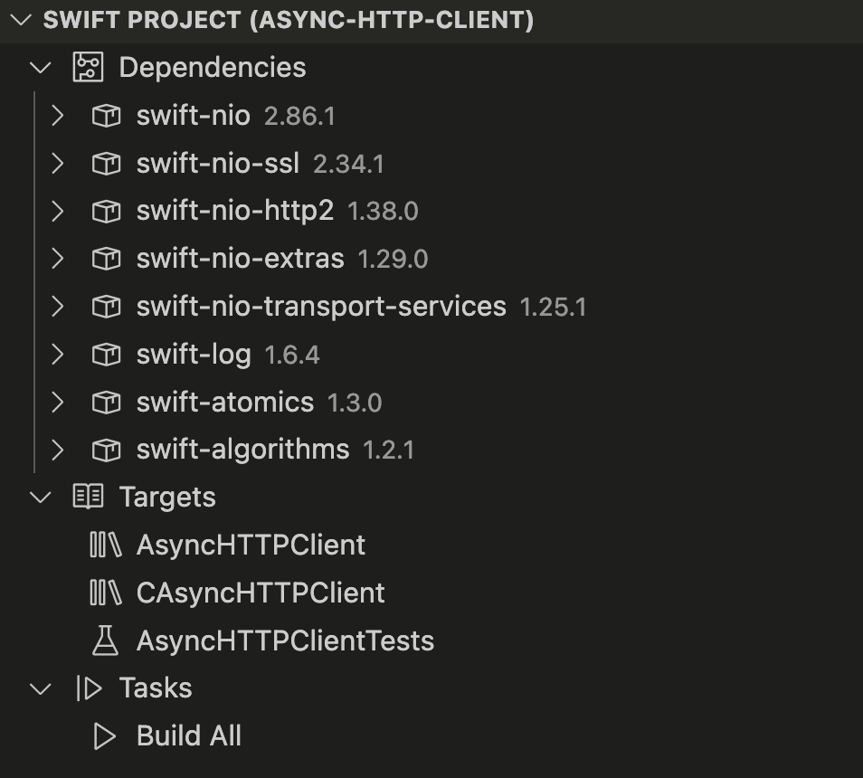

Article
Swift Project View
Use this view to get a high level view of your Swift project.
Overview
If your workspace contains a package, this extension will add a Swift Project view to the Explorer:

Use the project panel to view all targets, tasks, dependencies and commands of your Swift project.
See Also
Features
Automatic Task Creation
Add tasks for common operations with your Package.
Debugging
Debug your Swift executables using LLDB.
Language Features
Navigate and write your Swift code more easily with Language features.
Running and Debugging Tests
View test results in the Test Explorer.
Documentation Live Preview
Show a live preview of your Swift documentation while editing.